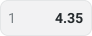
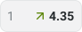
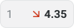
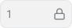
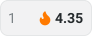

The product was growing. Our design process wasn't keeping up.
When we started, betPawa's interface was showing its age. Competitors were raising the bar with cleaner interfaces and more polished betting experiences – we needed to modernize the product to stay competitive, but we had a more fundamental problem to solve first.
There was no proper design system.
Designers were recreating the same elements across different features. Developers didn't have a shared component library to rely on. Even relatively simple changes required additional discussions, manual specifications, and repeated implementation work – and because there wasn't a central reference for the product's screens and user flows, designers often had to rebuild existing pages just to explore a new idea. We were spending too much time recreating things we'd already designed.
We didn't need another UI kit. We needed a better way to build products.
A component library alone wouldn't solve everything. We wanted a foundation that would make the interface more consistent, reduce repetitive work, and help design and engineering move in the same direction. There were four things we needed to get right:
We also wanted designers to spend less time rebuilding existing screens and more time solving actual product problems.
That became the goal behind the system.
Starting with the smallest decisions
Rather than designing isolated components, we followed Atomic Design principles – organizing the foundation around reusable elements that could be combined into increasingly complex patterns. The idea was straightforward: build the basics properly once, then reuse them across the entire product.
A system designed to evolve
We established shared foundations for typography, color, spacing, and component behavior. Just as importantly, we needed to make decisions about what belonged in the system and what should remain specific to a particular experience – not everything had to become a universal component. Overly generic components can become difficult to maintain, so we focused on patterns that could actually be reused.
The goal wasn't to build the biggest library possible. It was to build one people could work with.


Components that work beyond a single screen
Sports betting has a lot of interface states. An odds button, for example, isn't just a rectangle with a number inside it – it needs to communicate selection and changing availability, while remaining clear in different contexts. We approached recurring UI elements as systems of properties, variants, and states rather than collections of static designs, which made it easier to reuse the same building blocks across multiple product experiences without constantly creating new versions.





We stopped designing screens from scratch.
A component library solved only part of the problem – even with reusable components, designers still needed to understand how different parts of the product fit together. So we went further: we documented the product's pages and user flows in Figma, building a shared reference that designers could return to whenever they started working on a feature. Instead of recreating a match details page or rebuilding a navigation flow, we could start from an existing structure and focus on the change that mattered.
The system became more than a collection of components. It became a working map of the product.
A shared language made handoff simpler.
Previously, preparing designs for development involved a lot of manual work – screens needed additional explanation, behaviors weren't always documented consistently, and developers didn't have a shared implementation library to reference. We worked closely with engineering to improve that process: by aligning component structures, states, and design specifications, we made it easier to understand what needed to be built and how it should behave.
Instead of handing over isolated screens, we could provide designs based on established patterns – fewer decisions had to be made from scratch during implementation. It also changed how we worked together: design and development were no longer treating every screen as an entirely new problem.
A new theme became a test of how flexible the system really was.
Dark mode was an important part of the updated product experience – user feedback had highlighted demand for a darker interface, especially relevant to people spending extended periods following live sporting events. With the design system in place, we could approach dark mode as an extension of the shared foundation rather than a separate redesign of every screen. By defining theme-specific color relationships and reusing the existing component structure, we could maintain consistency across both experiences without maintaining two completely separate sets of components.
What if the design system could help us build prototypes, too?
Once the system was established, we started exploring a new question: could we use the same components and product rules to generate realistic, interactive prototypes with AI? We began working with Claude, giving it the context it needed to understand the design system – component specifications, layout patterns, interface rules, and examples of existing product experiences. Instead of asking AI to invent an interface from scratch, we wanted it to work within the same constraints as our designers.
The goal wasn't to replace the design system with AI. It was to make AI useful because the system already existed.
From an idea to a testable experience
With a structured component foundation and the right context, we could create interactive prototypes that closely matched the production experience – a faster way to explore ideas. We could build a realistic flow, put it in front of users, gather feedback, and refine the concept before committing to the full implementation process. The design system wasn't just helping us ship interfaces anymore – it was also helping us test what to build next.

Less repetitive work. More time to solve real problems.
The biggest change wasn't visual. We went from rebuilding interfaces and clarifying recurring decisions to working from a shared foundation – designers had reusable components and complete page structures, developers had clearer specifications and more consistent interaction patterns, and AI-assisted prototyping gave us another way to validate ideas before investing in production. The system also provided a foundation for the broader product redesign, including support for light and dark experiences.
Beyond the numbers, the team had a more reliable way to design, prototype, and deliver product changes – and the benefits kept growing as we incorporated new components, patterns, and AI-assisted workflows.
The most valuable part of a design system isn't the components.
Building the system taught me that consistency is only one part of the problem – a design system becomes genuinely useful when it changes how people work. The component library helped us create a more consistent interface. The documented flows reduced repeated work. Better collaboration with developers made implementation clearer. And later, the same foundation became useful for AI-assisted prototyping.
That last part was particularly interesting to me. We didn't originally set out to build an AI-ready workflow, but once the product had reusable components, clear rules, and documented patterns, AI had something concrete to work with. Looking back, that's what made the project valuable – we weren't just creating a new visual language for betPawa.
We were building a foundation the team could keep using long after the initial redesign was finished.